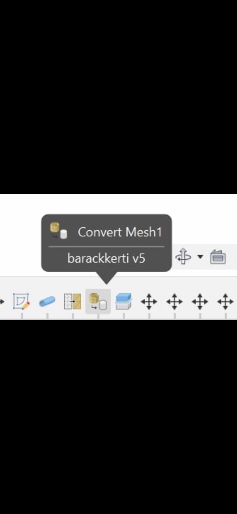
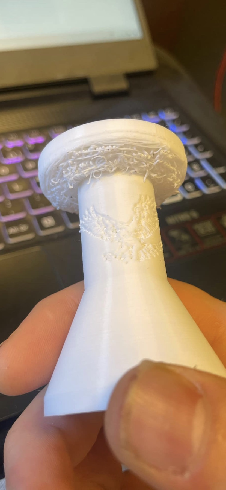
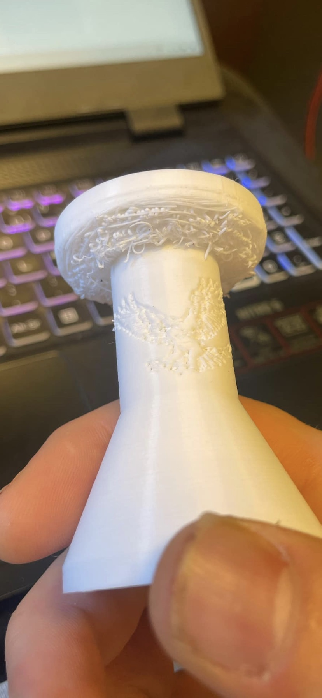
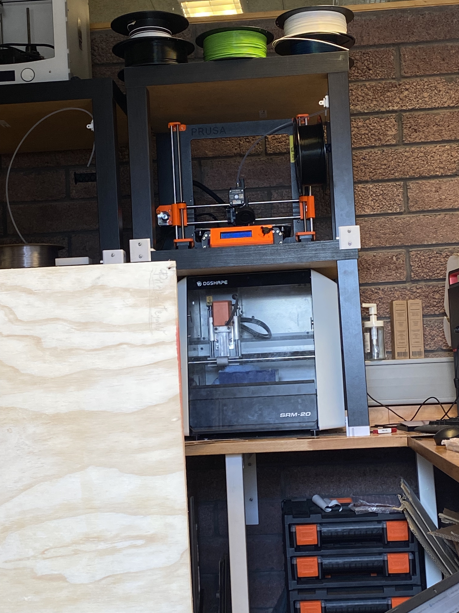
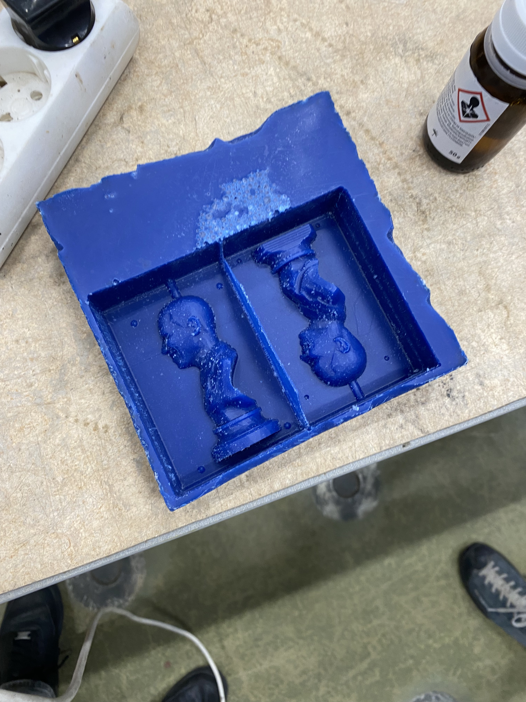

Til baka á forsíðu
Lokaverkefni - Tölvuvædd framleiðsla
Lýsing á Lokaverkefninu fer hér.
Lokaverkefni
Lokaverkefni þessa áfanga snérist um það að vinna heildstætt verkefni með notkun þeirra aðferða sem við lærðum í námskeiðinu. Aðalþema verkefnisins var fræsun, en velja mátti milli þess að nota ShopBot, mjög stóran fræsara, eða Roland SRM-20, mun minni. Við ákváðum að nota minni fræsarann til að búa til mót

Hluti 1:Val á hlut
Fyrsta hugmyndin var að búa til einhvers konar mót fyrir sápu, mögulega eins og fight club sápan hér fyrir neðan. Hönnunarsvigrúmið fyrir sápu er hins vegar ekki mjög mikið þannig að við unnum ekki með þá hugmynd. Næsta pæling var að nota sömu aðferð til þess að búa til kerti

Með fight club þemaið í huga, datt okkur í hug að gera það úr hausnum af Brad Pitt. Við fundum hins vegar engin open-source þrívíðarskönn af Brad Pitt á netinu þannig að við ákváðum í staðinn að vinna með eftirfarandi líkan af Obama sem við fundum á Sjá 3D módel Barack Obama hér
og gera kerti úr líkaninu ásamt kertastjaka í bandaríkjalegu þema sem færi með.Hluti 2-1: Hönnun á styttu
Fyrsta skref hönnunar var að breyta líkaninu úr mesh í solid object. Til þess notuðum við modify>convert mesh fallið í fusion.
 Að því loknu fylgdum við með tveimur myndböndum frá Fab Lab akureyri sem sýna hvernig hægt er að skipta líkani í tvennt og undirbúa fyrir fræsun. Myndböndin
má nálgast hér.
Að því loknu fylgdum við með tveimur myndböndum frá Fab Lab akureyri sem sýna hvernig hægt er að skipta líkani í tvennt og undirbúa fyrir fræsun. Myndböndin
má nálgast hér.

Eitt sem við lentum í þegar við fórum að prófa manufacture hlutann var að reikningur á milli skrefa tók mjög langan tíma. Það hlaut að vera vegna þess að líkanið var of nákvæmt. Til þess að laga það og vonandi flýta ferlinu aðeins færðum við nálina aftur fyrir það þegar meshinu var breytt í solid body. Þar var hægt að nota mesh reduce fallið til að einfalda líkanið töluvert.
 Nú var hönnuninn tilbúinn og lokaafurðina má sjá hér að neðanHluti 2-2: Hönnun kertastjaka
Til þess að hanna kertastjakann þá var byrjað að skilgreina breytur fyrir allar stærðir í modify>change parameters svo hægt væri að breyta líkaninu seinna. Síðan var teiknaður einn hringur og notað construct>offset plane þar botnflöturinn var færður upp um ákveðna vegalengd. Á nýja fletinum var svo gerður nýr hringur og notað síðan create>loft fallið til að teikna á milli hringjanna.
 Kertastjakinn var þá exportaður sem .3mf yfir í prusa slicer og prentaður. Hann kom svona út.
Sjá má að skögunin í efri hlutanum hefði mátt hafa smá support en lítur annars nokkuð vel út.

Kertastjakinn var þá exportaður sem .3mf yfir í prusa slicer og prentaður. Hann kom svona út.
Sjá má að skögunin í efri hlutanum hefði mátt hafa smá support en lítur annars nokkuð vel út.

Hluti 2-3: Mælingar á íhlutum
Þá var komið að því að mæla íhlutina. Til fræsunarinnar fengum við að nota tvo bora, einn 1/16 tommu að þvermáli og annan 1/8 tommu. Mælingarnar má sjá hér


 Bitinn sem við áttum að nota var vaxkubbur að þykkt ca. 34 mm og breidd og hæð 150 mm. Til þess að passa að líkanið væri rétt stærð fyrir kubbinn valdi ég alla bodya ásamt sketchum og notaði modify>scale fallið. Þá gat ég minnkað líkanið þangað til að hæðin var orðin cirka 28 mm.
Sjá má á líkaninu að á baki obama er beinn veggur niður. Fusion átti í svolitlum erfiðleikum með að reikna toolpathið fyrir þann hluta módelsins. Við komumst að því að “Length below holder” í bitastillingunum var of lítið þannig að bitinn næði ekki alveg ofan í vegginn. Við hækkuðum það þá upp í 50 mm sem lagaði vandann. Þá var ekkert eftir nema að skella þessu í fræsarann.
Bitinn sem við áttum að nota var vaxkubbur að þykkt ca. 34 mm og breidd og hæð 150 mm. Til þess að passa að líkanið væri rétt stærð fyrir kubbinn valdi ég alla bodya ásamt sketchum og notaði modify>scale fallið. Þá gat ég minnkað líkanið þangað til að hæðin var orðin cirka 28 mm.
Sjá má á líkaninu að á baki obama er beinn veggur niður. Fusion átti í svolitlum erfiðleikum með að reikna toolpathið fyrir þann hluta módelsins. Við komumst að því að “Length below holder” í bitastillingunum var of lítið þannig að bitinn næði ekki alveg ofan í vegginn. Við hækkuðum það þá upp í 50 mm sem lagaði vandann. Þá var ekkert eftir nema að skella þessu í fræsarann.
Hluti 3: Fræsun
Nú voru öll hönnunarsjöl tilbúin og búið að gera allar nauðsynlegar mælingar. Okkur var gefinn vaxkubbur, sem fræsarinn átti að skera en þá áttuðum við okkur á að við myndum þurfa að skala hönnunina á Obama aðeins niður. Við gerðum það og fengum svo aðstoð frá Hafliða til að klára að setja upp hönnunarkjalið og svo var farið beint í fræsarann. Eins og kom fram í mælingakaflanum notuðum við fyrst pocket clearing og síðan parallel til þess að fínpússa. Þar sem bitarnir voru frekar litlir tók fræsunin mjög langan tíma (ca. 11 tíma). Hér að neðan má sjá myndir af fræsaranum að vinna og hverning mótið kom út
 Hluti 4: Lokaskref
Síðan þurfti bara að klára mótið. Það var gert með því að hella sílícón blönduðu eldvarnarefni í mótið. Til þess að mæla nauðsynlega rúmmál sílikonsins fundum við fyrst eðlisrúmmál sílikonsins sem við ætluðum að nota sem var ca. 1,2 g/c^3. Þá reiknuðum við u.þ.b rúmmál mótanna án tillits til styttunar. Þá var hægt að fara í fusion og finna rúmmál Obama og mínusa það frá rúmmál mótanna. Síðan var sú tala margfölduð með eðlisrúmmálinu og 1.15 fyrir skekkjumörk. Jafn framt þurfti hlutfall leysiefnis og sílikons að vera 1 á móti 10 þannig að magn leysiefnis var heildarþyngdin sinnum 0.1 Þá var þessu hellt í mótin og látið bíða í 3 sólarhringa eins og kom fram á pakkningunum.


Hluti 5: Niðurstöður
Þetta kom nokkuð vel út fyrir utan það sem var minnst á áðan. Það var að þegar líkanið var smækkað til þess að passa í vaxmótið gleymdist að stækka þrennt. Vegginn á milli mótanna, Rörið þar sem vaxið færi í gegn og kúlurnar þar sem tveir helmingar mótsins smella saman. Þessi þrjú atriði voru mjög lítil sem gerði það að verkum að við gætum engan veginn hellt neinu í mótið. Til þess að laga þetta var fyrsta hugmyndin að bora stærra gat í toppinn. Þetta gekk ekki þar sem sílikonið er of mjúkt. Önnur hugmynd sem hefði virkað var að finna e.k. hálfmána-laga hníf til þess að skera út stærra gat. Það fannst því miður ekki þ.a. við ákváðum að segja þetta gott. Hér fyrir neðan má engu að síður sjá myndir af lokaafurðinni


Verkefnaskipting
Tómas undirbjó prófunarlíkan af lítilli kúlu sem var áætlað að fræsa áður en fræsunin á hönnunarlíkaninu. Það var þó ekki notað því Hafliði sagði að það væri óþarfi og því fylgir það ekki með í skýrslunni. Helgi sá um að undirbúa líkanið í fusion. Síðan gerðum við báðir manufacture hlutann í fusion og mælingar á íhlutum. Helgi gerði skýrsluna frá upphafi til Mælingakaflans. Tómas kláraði skýrsluna og setti hana ásamt myndum inn í html. Síðan gerðum við báðir kynninguna. Hér að neðan má sjá gannt chart sem var notað